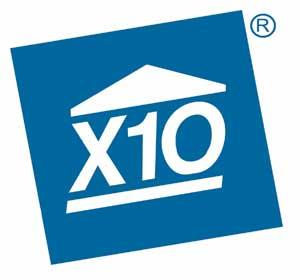

spending big bucks to get a specialized control system installed inside your walls
Gathering lots of incompatible, unreliable hardware and a lot of frustration
As our fan suggests, Push could start an external car heater in Sweden! Deploy Microbots to help your loved one to recover from an unfortunate skiing trip.

The granddaddy of home automation protocols, X10 has been around since the mid 70’s. It started out as a powerline-based system (meaning it’s hard-wired into your walls), but eventually went wireless. It’s not known for great speed or communication between units. If you’re just gettting into home automation, we suggest picking up devices compatible with newer wireless standards, as X10 systems are typically more difficult to install in comparison.
Insteon is a home automation protocol designed to bridge the gap between powerline-based and wireless protocols, so it uses both. It’s also compatible with x10 devices, so it’s not a half bad choice if you’ve got a house filled with X10 stuff already and are looking to transition to wireless. A wide range of Insteon devices are available right now, and you can browse through the company’s entire catalog on its official Smarthome Blog.
Z-Wave is a wireless home automation protocol that runs on the 908.42MHz frequency band. It’s relatively new in terms of home automation protocols, but has grown quite rapidly in the past few years. The group behind it, the Z-Wave Alliance, now boasts over 1,000 different compatible devices, giving you a wide range of options when it comes to automating your home. One of the key features of Z-Wave is that it utilizes a type of network called a “mesh network,” which essentially means that one Z-Wave product will pass the signal along to another until it reaches its intended destination. This relay system greatly extends its range. It’s also extremely low power, which is ideal for devices that rely on battery power.
Of course, Wi-Fi is already fairly ubiquitous, so it’s not surprising that a broad range of manufacturers have begun making smart home devices that work with it. If you already have a wireless router, you won’t need to pick up a hub/access point in order for your compatible devices to connect to it. This does, however, come with one key drawback: interference and bandwidth issues. If your house is already full of Wi-Fi-connected gadgets (TVs, game consoles, speaker docks, laptops, phones, tablets, etc.) then your smart devices will have to compete for bandwidth and will potentially be slower to respond. Wi-Fi also consumes a lot of power, so it’s not ideal for battery-based smart devices like doorbells and locks.
BLE is short for Bluetooth Low Energy. There are tons of devices that have this baked into it – everything from bike locks to light bulbs to speaker docks – and it’s sometimes used in home automation, but usually not as the main protocol. As its name suggests, BLE doesn’t use a lot of power, but also has a fairly limited range compared to other networking protocols, so it’s not great for stuff that needs to stay connected all the time like security systems and motion sensors.
Thread
Thread is an IPv6-based, closed-documentation, royalty-free[1] networking protocol for Internet of Things (IoT) "smart" home automation devices to communicate on a local wireless mesh network. IPv6 over Low power Wireless Personal Area Networks.
6LoWPAN: IPv6 over Low power Wireless Personal Area Networks.
An abbreviation for the word Konnex and describes a standardized protocol for building control and also has its place in traditional home automation. Its biggest advantage is the independence of any particular hardware platform which means that it could also be executed on an 8-bit microcontroller. The technology focuses primarily on safety as well as energy savings. That’s why the monitoring of all the different components in a KNX system plays an important role. If the air conditioning , the heating and the lighting is controlled by a single system multiple possibilities for cutting costs arise.
KNX is based on three technologies: EIB (European Installation Bus), EHS (European Home Systems Protocol) and BatiBUS. It is therefore built on a well established foundation that has been matured over 24 years.
Moreover it allows various ways of communication including twisted pair, radio frequency, infrared, power line and IP/Ethernet. There is no need for centralized control centers since all devices speak the same language and communicate via the same Bus.
Like Z-Wave and Zigbee , KNX has its own association that drives the development of the technology. There are currently about 370 members in the KNX association.